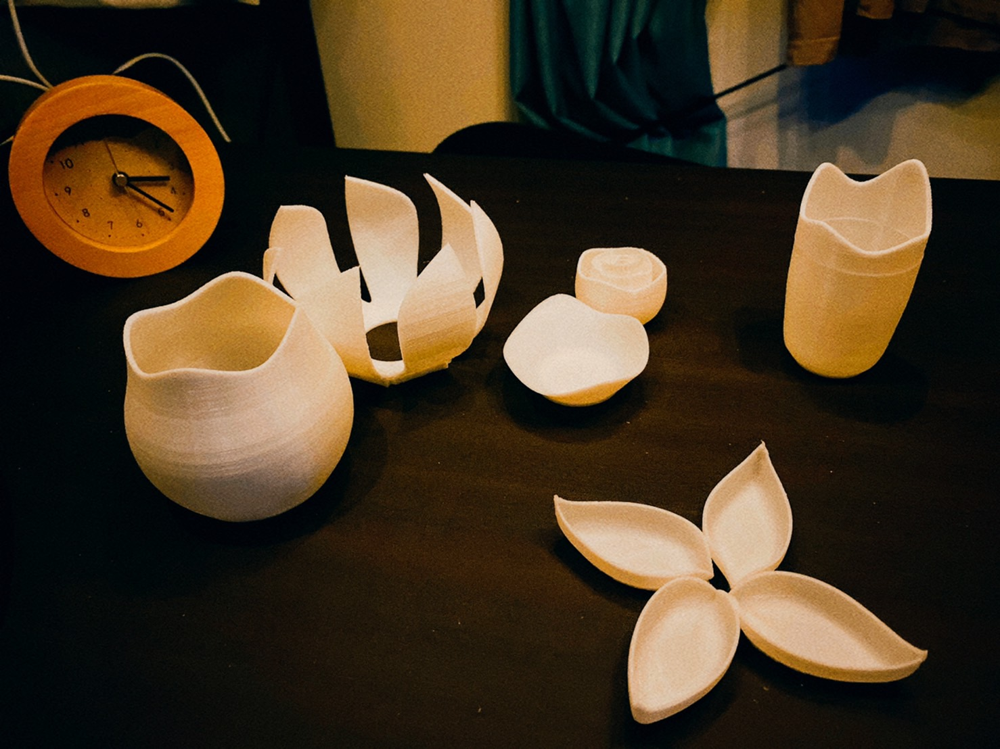

Schedule
ステップ１/すくうモノを作る(機能編)✓
注意点
※小さく設計すること
※一発でプリント、出力できるものにすること
※サポートなし
※二つで一つのモノは考えない(例 組立式
※著作権には気を付ける
※作って終わりにしない。実際に使って次の授業時間までに発表できるように準備する(動画や写真)
※出力時間は短く。最低一日以内
※ゴミ（使えないモノ）は作らない
ステップ2/モノのデザインをより美しくする
モノを見たときに、いいなと思えるデザインに手直しする。
手直しした上で機能面、出力時間もチェックをする。
自分のデザイン軸でモノをシリーズ化
ステップ3/生活の場面のすべてに3プリンターで作ったモノがある未来の提案
自分のデザインの軸で生活のシーン(デスク/玄関)のモノを作る
モノを買ってくるのではなく、家でモノをプリントして使える未来を社会に問いかける
デザイン軸/07/02
私のデザイン軸は、花や植物のような有機的なデザインとなった。


このデザイン軸で、モノを作っていきます。
シーン１/デスク
09/02

Penholder
09/02
Lamp
08/20
08/21
Bookstand
07/09

Accessory case
07/02
09/02

シーン2/玄関
07/09